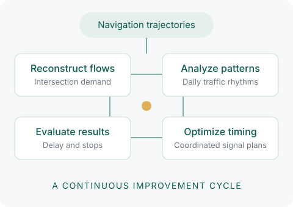
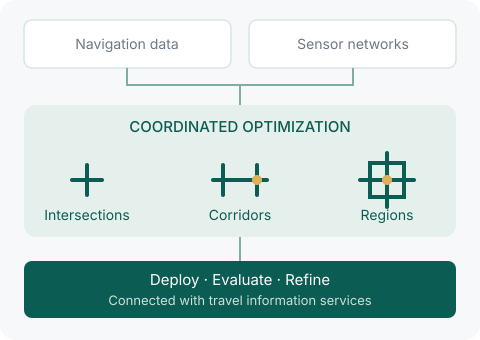

Cloud signal control
Bring traffic flow reconstruction, pattern analysis, regional signal optimization, and evaluation together in the cloud. Navigation data and large traffic models help cities put better timing plans into operation.


Green-light Research and Applications through Intelligent Learning
Coordinating Urban Traffic Signals with AI
From navigation trajectories to better signal timing—a continuous cycle of traffic flow reconstruction, optimization, deployment, and evaluation.
GRAIL bridges AI research and traffic engineering to deliver affordable, sustainable signal optimization at city scale. It turns vehicle navigation trajectories into practical improvements on the road.
By estimating existing signal timing plans and traffic flows from navigation trajectories, GRAIL uses reinforcement learning to identify intersections and corridors for coordinated optimization. It addresses two key questions: which intersections should work together, and how should their signals be timed? Deployment and evaluation complete the cycle, connecting analysis with measurable outcomes.
As of October 2026, GRAIL has been deployed in 86 cities and regions across China. Before-and-after comparisons in 23 tracked cities show average reductions of approximately 15% in delay per vehicle and 13% in stops. By bringing together connected vehicle data, AI, and traffic engineering, GRAIL supports ongoing improvements in how cities move.
REAL-WORLD IMPACT
PRODUCTS & SOLUTIONS
Cloud-based signal optimization. Citywide traffic coordination.
Bring traffic flow reconstruction, pattern analysis, regional signal optimization, and evaluation together in the cloud. Navigation data and large traffic models help cities put better timing plans into operation.

Combine internet-based traffic data with dedicated sensor networks to diagnose congestion and coordinate intersections, corridors, and regions. Evaluation and travel information services connect the workflow across the city.

NEWS
Summaries in English. Original reporting in Chinese.
No updates yet.
PUBLICATIONS
Peng Chen · Jiaming Xu · Yu Mei · Lei Wei · Transportation Research Part C: Emerging Technologies, 2025, 172: 105019
Lei Wei · S. Travis Waller · Yu Mei · Peng Chen · Yunpeng Wang · Meng Wang · Transportation Research Part C: Emerging Technologies, 2025, 170: 104937
Qian Sun · Rui Zha · Le Zhang · Jingbo Zhou · Yu Mei · Zhiling Li · Hui Xiong · Proceedings of the 30th ACM SIGKDD Conference on Knowledge Discovery and Data Mining (KDD), 2024: 2765–2774
Lei Wei · Peng Chen · Yu Mei · Jian Sun · Yunpeng Wang · Journal of Intelligent Transportation Systems, 2024, 28(6): 988–1010
Weijia Zhang · Le Zhang · Jindong Han · Hao Liu · Yanjie Fu · Jingbo Zhou · Yu Mei · Hui Xiong · Proceedings of the 30th ACM SIGKDD Conference on Knowledge Discovery and Data Mining (KDD), 2024: 4302–4313
Jingci Ming · Le Zhang · Wei Fan · Weijia Zhang · Yu Mei · Weicen Ling · Hui Xiong · 2022 IEEE International Conference on Data Mining (ICDM), 2022: 348–357
Lei Wei · Peng Chen · Yu Mei · Yunpeng Wang · Transportation Research Part C: Emerging Technologies, 2022, 140: 103707
LET’S COLLABORATE
Explore signal optimization tailored to your road network, and turn shared research into practical improvements.
whqyqy@hotmail.com